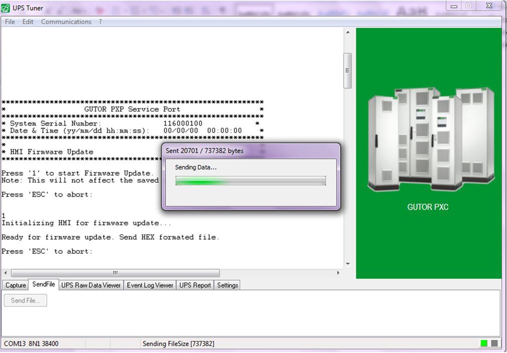

Note: The update of the firmware
on the controller box can be done via a RS232 serial connection.
Connect your laptop to the service port (J405) located
on the rear side of the front panel (A810).
Note: Use the service port cable 940–0024D for the
proper connection of all required signals.
Launch the UPS Tuner and select Display Module. After start-up, your laptop will automatically log in and the main
menu appears on the terminal screen.
Note: Navigate through the menu tree by typing the number
of the submenu you wish to enter, followed by the ENTER key.
Type 5 (HMI Firmware
Update).
Type 1 to initialize the HMI for
the firmware update, or press the ESC key to
abort. After successful initialization, the HMI waits for a new hex
file.
Click on Send file and browse to
the firmware file on your laptop and click on Open.

After the file transfer, the file checksum will now appear
on the screen. Check if file checksum is correct before continuing.
If the file checksum is not correct, press the ESC key.
Type y to confirm the update and
copy the new firmware from the SRAM to the FLASH memory.
Note: If you wish to cancel the update and keep the old firmware,
press the ESC key.
After the firmware has been successfully updated and Update done. Restart system... appears on the screen,
restart the HMI by either unplugging the HMI supply or switch the
system off and then back on.